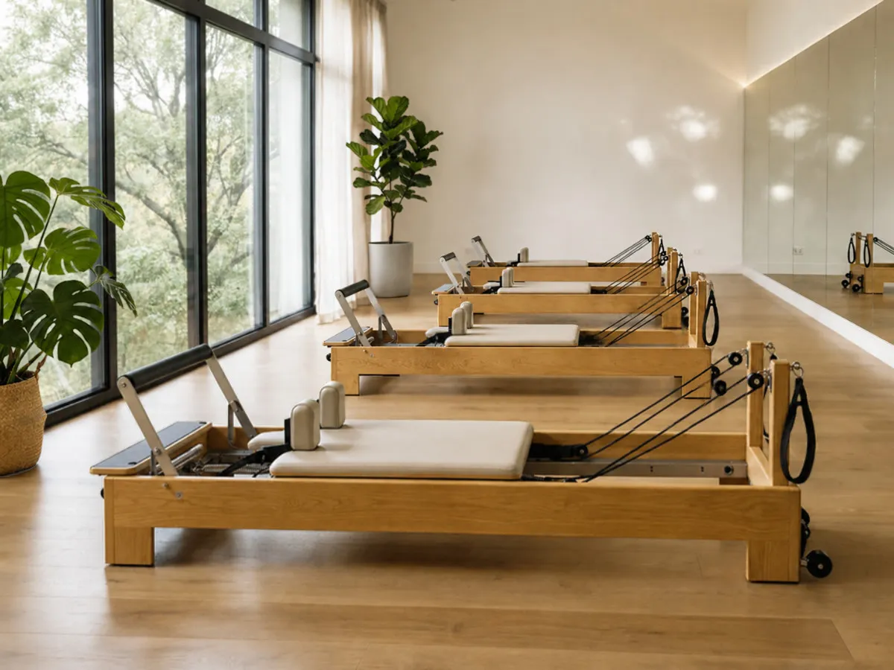

Pilates in Nijmegen: reformer of mat?
Bijgewerkt op 23 november 2026.
Pilates maakt je buik en rug sterk en je houding beter. In Nijmegen kun je het op twee manieren doen: op een reformer, een soort bed met veren en een slee, of gewoon op een mat. Welke past bij jou? We leggen het verschil uit en zetten de studio's op een rij.

Reformer of mat: wat is het verschil?
Bij reformer pilates train je op een toestel met veren. Die geven weerstand, dus het voelt al snel als krachttraining. De groepen zijn klein, omdat er maar een paar toestellen staan. Daardoor is het ook duurder.
Bij matpilates heb je alleen een mat nodig, en soms een bal of elastiek. Je gebruikt je eigen gewicht. Het is goedkoper en je vindt het ook bij yogastudio's en sportscholen.
Ben je nieuw? Dan is een beginnersles op de reformer een goede start. De leraar ziet dan precies wat je doet.
We lazen in november 2026 de websites van de studio's in de categorie yoga en pilates en de vechtsportscholen die ook pilates geven.
Reformer pilates
Reform: boutique studio in het centrum
Reform aan het Hertogplein is een lichte, rustige studio met kleine groepen. Je kiest uit lessen als Beginners Reform, Classic Reform en Gym Vibes. Ze geven ook matpilates en privélessen.
De lessen zijn in het Nederlands en in het Engels, en mannen zijn net zo welkom als vrouwen. Na de les kun je blijven hangen voor koffie of een ontbijt. Nieuw? Begin met een proefweek.
Goed voor: internationale studenten en wie het ook gezellig wil hebben.
Website van Reform · Hertogplein 1, centrum
Pilates Gym: de eerste reformerstudio van Nijmegen
Pilates Gym noemt zich de eerste reformerstudio van Nijmegen. Je kiest uit klassieke en moderne reformerlessen, Hot Mat Pilates in een studio met infraroodwarmte, zwangerschapspilates en privéles. Er zijn twee vestigingen: aan de Nieuwe Dukenburgseweg en aan de Hollandiaweg. Parkeren is gratis.
Een kennismaking van twee lessen kost 36 euro. Eén les per week kost 68 euro per vier weken, voor minstens een jaar. De studio noemt 'women only' als een van haar kenmerken.
Goed voor: vrouwen die vaker per week willen trainen, ook tijdens en na de zwangerschap.
Website van Pilates Gym · Nieuwe Dukenburgseweg 7 en Hollandiaweg 5B
Matpilates, vaak samen met yoga
Michi: pilates in de buurt, ook alleen voor vrouwen
Trainingscentrum Michi aan de Staddijk is opgericht in 2018 en geeft karate, yoga, kracht en pilates. Er is ook een pilatesgroep alleen voor vrouwen.
Je kunt een gratis proefles aanvragen.
Goed voor: wie dicht bij huis rustig wil beginnen.
YogaPoint: yoga en pilates onder één dak
YogaPoint aan de Van Welderenstraat is vooral een yogastudio, maar heeft ook pilateslessen op het rooster. Handig als je beide wilt doen met één abonnement.
Goed voor: wie yoga en pilates wil afwisselen.
Ook goed
- Pilates Studio Pontanus aan de Pontanusstraat, bij het Keizer Karelplein.
Zoek je liever yoga? Kijk dan in onze gids yoga in Nijmegen per stijl.
Veelgestelde vragen
Wat kost pilates in Nijmegen?
Reformer pilates is het duurst, omdat de groepen klein zijn. Bij Pilates Gym kost één les per week 68 euro per vier weken. Matpilates is meestal goedkoper, zeker als het in een yoga-abonnement zit.
Is reformer pilates goed voor beginners?
Ja. De veren helpen je juist, en in een kleine groep let de leraar goed op je houding. Kies wel een beginnersles, zoals Beginners Reform bij Reform.
Kan ik als man pilates doen in Nijmegen?
Zeker. Bij Reform zijn mannen en vrouwen welkom, en de lessen zijn in het Nederlands en het Engels.
Mag ik pilates doen als ik zwanger ben?
Vaak wel, maar overleg eerst met je verloskundige. Pilates Gym geeft speciale zwangerschapspilates.